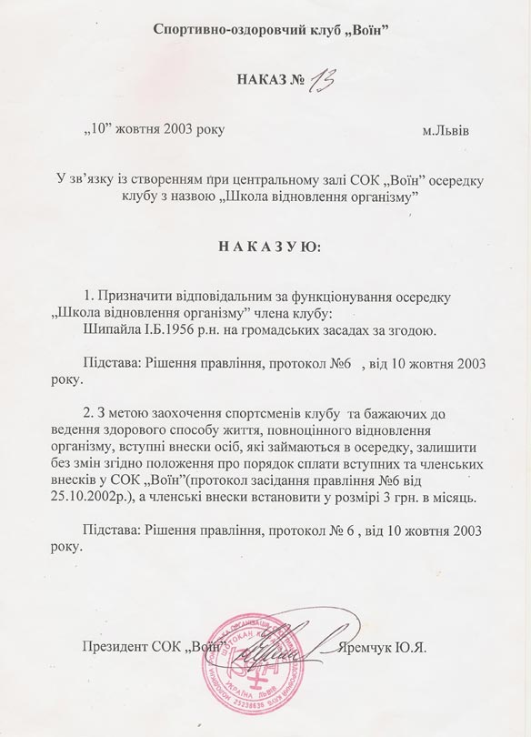
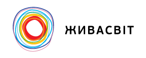

Автор системи “Живасвіт”
Дипломований спеціаліст, практикуючий терапевт,
вчитель йоги, тайдзицюань, кен-дзютсу
1982
Диплом Львівського Державного медичного інституту спеціальність лікувальна справа присвоєно кваліфікацію лікар
02.08.1982
Інтернатура по анестезіології-реаніматології
06.08.1983
Львівська обласна клінічна лікарня - лікар анестезіолог (анестезіологічно-реанімаційне відділення)
01.10.1989
Лікар-анестезіолог реаніматолог в львівському міському пологовому будинку №2
15.01.1992
Лікар-терапевт та зав відділенням в пансіонаті “Смерічка’’
04.09.1997
Засновник мистецько спортивно-оздоровчої асоціації ”Аркан”
03.07.1998
Лікар-тренер команди майстрів з водного поло Львівська обласна рада ФСТ Динамо
04.05.2000
Завідуючий господарством в центр соціально-трудової професійної та медичної реабілітації інвалідів


ПРИВАТНА ПРАКТИКА
в сфері відновлення здоров’я
10.10.2003
Лікар осередку Спортивно оздоровчого клубу ‘’Воїн’’ Школа відновлення організму на громадських засадах

2007
Початок системи “Живасвіт”
2009
Кваліфікація спеціаліста фізіотерапевта
30.12.2010
Кваліфікація лікаря(провізора) спеціаліста